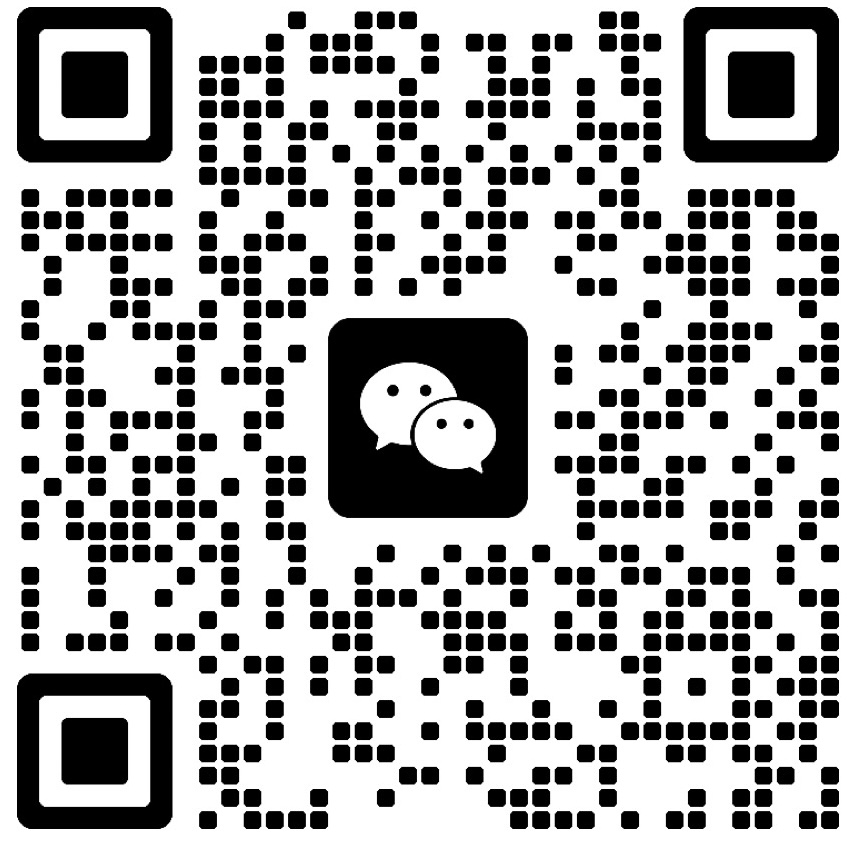

聊聊你们的 IDP：
从一张截图开始
把你们的配置/内容管理页面截图或 30 秒录屏发我，
不聊需求文档、不签 NDA、不开会——先看看问题在哪。
你会得到
3 条高优先级可落地优化建议
不是泛泛的"用户体验需要提升"，而是具体到"这个筛选器应该从下拉改为 Tag 切换，因为选项只有 4 个"。
一份"改版切入点"路线图
先动哪里最值？哪些改动投入小但用户感知强？帮你排出优先级。
如需合作：周期与交付清单
明确范围、时间、交付物——不模糊，不画饼。
怎么发？
加微信后，直接发：
📸 一张你们后台的页面截图
🎥 或者一段 30 秒操作录屏
💬 加一句你觉得最痛的点
我通常会在 24 小时内回复。周末可能慢一点，但一定会回。

扫码添加，或手动搜索微信号：
添加时请备注「IDP 体验咨询」
我会优先通过 🤝
不确定适不适合找我？
如果你的产品有以下情况，大概率我能帮上忙：
✦ 配置页越来越复杂，用户开始迷路
✦ 内容管理流程冗长，操作人员抱怨不断
✦ 多个模块的交互"各管各的"，一致性很差
✦ 想做组件库 / 设计规范，但不知道从哪下手